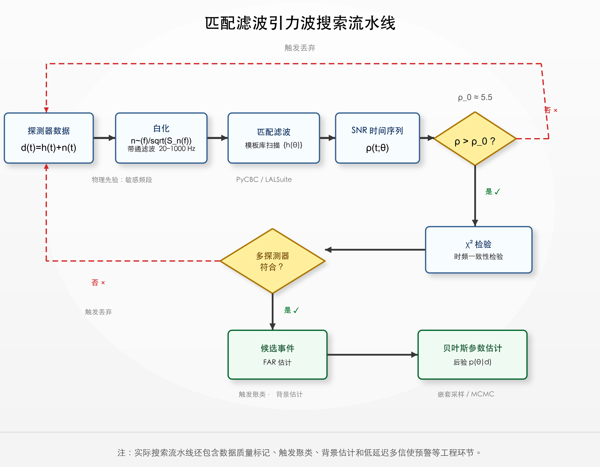
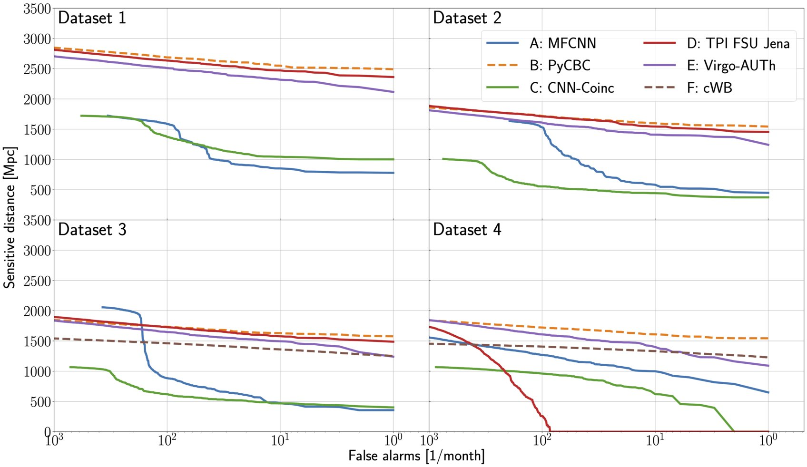

Chapter 3
经典引力波数据分析方法
在机器学习方法进入引力波数据分析领域之前，这一领域已发展出一套成熟且严格的经典方法体系。理解这一体系——其理论基础、实际性能、以及内在局限——是把握后续各章 AI 方法动机的前提。本章系统介绍匹配滤波、贝叶斯推断框架，以及这两类方法在实际引力波分析中的应用与挑战。
3.1 匹配滤波与模板库构建
匹配滤波（matched filtering）是引力波信号搜索的经典方法，其理论基础是奈曼-皮尔逊引理：在高斯平稳噪声中，匹配滤波给出最大信噪比，是最优的线性检测器 [46]。
给定探测器输出 \(d(t) = h(t) + n(t)\)，与模板 \(\hat {h}(t;\theta )\) 的匹配滤波统计量（信噪比时间序列）为
其中内积 \(\langle a,b\rangle = 4\,\mathrm {Re}\int _0^\infty \tilde {a}(f)\tilde {b}^*(f)/S_n(f)\,\mathrm {d}f\)。当 \(\rho \) 超过预设阈值时触发候选事件。
模板库（template bank）的构建是匹配滤波的核心工程挑战。对双黑洞系统，质量参数空间需要用足够密集的模板覆盖，使任意真实信号与最近模板的匹配度（fitting factor）不低于 97%。对于非旋转双黑洞，模板数量约为 \(10^4\)–\(10^5\)；加入自旋参数后，模板数量可增至 \(10^6\)–\(10^7\)。每个数据段需与所有模板做匹配滤波，计算量随模板数线性增长。
在实际搜索流水线（如 PyCBC、GstLAL）中，匹配滤波之后还需要一系列后处理步骤：\(\chi ^2\) 时频检验用于鉴别 glitch 产生的高信噪比触发；多探测器耦合检验要求两台或以上探测器在光速传播时延内同时触发；最终以误报率（false alarm rate，FAR）作为候选事件的显著性指标。
3.1.1 PyCBC 与 GstLAL：实际搜索流水线
PyCBC 和 GstLAL 是 LIGO-Virgo-KAGRA 合作组用于引力波搜索的两套主要流水线，均基于匹配滤波，但在实现细节和设计哲学上有所不同。
PyCBC 采用离线批处理模式，将数据分段（通常每段 256 秒）进行匹配滤波，然后在时间上合并触发事件 [47, 48]。其核心优势在于：基于 GPU 加速的高效 FFT 实现，使得对数百万条模板的并行匹配滤波在实践中可行；严格的 \(\chi ^2\) 时频检验，通过将信号频带分成若干子带分别计算 SNR，检验触发事件的时频一致性；以及基于背景估计的误报率计算，通过时间滑移（time slides）方法估计噪声背景的统计特性。
GstLAL 采用在线流处理模式，能够在数据产生后数秒内给出触发事件，适合低延迟预警场景 [49, 50]。其核心技术是奇异值分解（SVD）模板压缩：通过对模板库进行 SVD 分解，将数千条模板压缩为少量正交基向量，大幅降低实时匹配滤波的计算量，同时保持与完整模板库相当的灵敏度。
两套流水线的结果通过 GWTC（引力波暂态目录）发布 [1, 6]，构成了引力波天文学的核心数据产品。GWTC-3 系统汇总了 O1–O3 观测轮次的近百个引力波候选事件；随后 O4a 数据发布的 GWTC-4.0 进一步扩展了公开样本规模。O1 期间 PyCBC 和 GstLAL 对三个 BBH 事件（GW150914、GW151226、GW151012）的系统性分析 [51]奠定了引力波天文学的方法论基础。
3.1.2 匹配滤波的理论最优性与实践局限
奈曼-皮尔逊引理保证了匹配滤波在高斯平稳噪声下的最优性，但这一最优性的背后是一系列严格的理论假设，值得深入分析。在信号假设检验的框架下，判断“信号存在”与“纯噪声”的最优判决来自似然比：
最大化 \(\Lambda \) 等价于最大化匹配滤波统计量 \(\rho \)，在高斯噪声且波形已知的假设下这是最优的线性检测器。然而“线性”这一约束本身值得关注——在非高斯噪声中，更优的检测统计量可能包含非线性成分；深度学习方法的端到端特性允许网络学习非线性的检测策略，这是其在真实噪声中相对于标准匹配滤波流程具有改进潜力的重要原因。
模板库的密度要求来自匹配度（fitting factor）的概念。任意真实信号 \(h(\theta )\) 与模板库中最近模板 \(h(\theta ^*)\) 的匹配度定义为 \(\mathcal {FF} = \max _{\theta ^*}\mathcal {M}(h(\theta ), h(\theta ^*))\)，其中 \(\mathcal {M}\) 是归一化内积（match）。要求 \(\mathcal {FF} \geq 0.97\) 意味着因模板不完备导致的SNR损失不超过3%，对应体积损失约9%（\(1 - \mathcal {FF}^3 \approx 9\%\)）。满足这一密度要求的模板数随参数空间维度快速增长：非旋转双黑洞（2维质量空间）需约 \(10^4\) 条，加入对齐自旋（3维）需约 \(10^5\) 条，加入进动效应（6维有效自旋维度）需约 \(10^7\) 条。若试图以传统均匀模板库覆盖完整15维参数空间，计算代价将在当前资源条件下变得难以接受——这直接催生了对计算高效的人工智能方法的需求。
3.1.3 \(\chi ^2\)检验的物理原理与统计特性
\(\chi ^2\)时频检验是匹配滤波后处理中最重要的glitch鉴别工具，其物理思想极为深刻：一个真实的引力波信号在时频图上遵从特定的演化轨迹（啁啾特征），其贡献在各频率子带之间应该按照波形的功率谱分布均匀分配；而一个glitch（如blip或koi fish噪声）通常只在特定的频率区间产生高信噪比响应，其频率分布与引力波模板的分布不符。
具体地，将信号频带分为 \(p\) 个等贡献子带（即每个子带对理想匹配信号的期望 SNR 贡献相同），每个子带分别计算匹配滤波响应。对于真实信号，各子带响应应与模板预期一致，构造出的 Allen \(\chi ^2\) 统计量近似服从自由度为 \(2p-2\) 的 \(\chi ^2\) 分布；而由 glitch 产生的触发，其功率常集中在少数子带，导致 \(\chi ^2\) 值异常偏大。实践中通常使用约十几个子带，并将归一化后的 reduced-\(\chi ^2\) 与 SNR 组合为重加权 SNR，使真实信号的有效 SNR 基本保持，而 glitch 触发的排序统计量显著下降。
3.1.4 时间滑移背景估计方法
准确估计引力波搜索的误报率（FAR）是建立事件显著性的关键。引力波探测的误报来源于噪声涨落产生的偶然耦合：在两台探测器的数据中，分别出现高SNR触发，且两者在时间上落入允许的传播时延窗口（约 \(\pm 10\,\mathrm {ms}\)）。直接从理论计算这种偶然耦合率非常困难，因为需要准确描述噪声的统计分布（包括非高斯的glitch成分）。
时间滑移方法提供了一个有效的经验解决方案：将一台探测器的数据时间平移若干个离散步长（通常远大于探测器间光行时），与另一台探测器的原始数据重新计算耦合。由于真实天体信号只可能在约10 ms量级的传播时延内形成多探测器对应，较大的非物理时间平移会破坏真实信号的相干对应关系，使滑移样本可以近似表征噪声偶然耦合背景。通过大量时间滑移的统计，可以估计低误报率区域的噪声背景，从而对引力波事件候选体给出显著性评估。
O3期间PyCBC通过约200次时间滑移，生成了约200倍实际观测时长的背景数据，足以统计到FAR约 \(1/10^4\) 年量级的稀有耦合事件，为近百个引力波事件候选体提供了可靠的显著性估计。
低延迟引力波预警与多信使天文学是匹配滤波方法在实际应用中的重要扩展方向。GW170817双中子星并合事件的成功多信使观测表明，在引力波事件后约1.7秒内探测到伽马射线暴（GRB 170817A），进而触发全球数十台电磁望远镜的联合后随观测，最终在距离事件约11小时后发现了千新星（kilonova）的光学对应体。低延迟流水线和 BAYESTAR 能够在分钟量级完成候选识别和快速天空定位计算，但 GW170817 的首个公开 GCN 警报由于数据质量处理和人工审核等原因在并合后约40分钟发布；这一经历恰恰说明，低延迟分析不仅取决于算法速度，还取决于数据质量控制、审核策略和预警分发机制。与此形成对比，如果完全依赖离线批处理的 MCMC 参数估计（需要数小时），则可能错过千新星早期光变曲线中最有价值的阶段。因此，低延迟引力波分析的计算速度不仅是技术效率问题，而是直接决定多信使科学产出的天文学关键因素。
深度学习信号识别方法的一个核心优势，正在于其毫秒级的在线推断速度：它有望把部分触发和初筛环节压缩至毫秒级，从而在未来更高事件率条件下分担低延迟预警管道的计算压力。这是第5章深度学习信号识别方法的核心动机之一，也是从“有没有”引力波信号到“更快知道”引力波信号这一转变的技术基础。
图 3.1 将上述步骤压缩为一个概念化流程。需要强调的是，图中的单探测器 SNR 阈值只表示触发生成阶段的初筛；真实事件的可信度来自重加权 SNR、\(\chi ^2\) 时频一致性、多探测器耦合、时间滑移背景、数据质量审查和候选事件验证的综合结果，而不是某一个阈值本身。

引力波数据分析主要在频域进行，这源于两个实际优势：其一，噪声的功率谱密度 \(S_n(f)\) 在频域是对角化的（对于平稳噪声），使内积计算转化为简单的频域加权积分；其二，快速傅里叶变换（FFT）使频域计算在实践中高效可行。
时频域方法（Q 变换、短时傅里叶变换、小波变换）在特定场景下具有优势。对于短持续时间的信号（如双黑洞并合的并合-衰荡阶段）或未建模信号（如超新星核坍缩、宇宙弦碰撞），时频图能够直观显示信号的时频演化特征，是无模板搜索（burst search）的基础工具。Coherent WaveBurst（cWB）等算法 [52]在时频域寻找多探测器相干的超出噪声背景的能量聚集，不依赖于具体波形模板，对未建模信号更为敏感。
Q变换是引力波数据可视化的标准工具，其数学定义为：\(X(t_0, f_0; Q) = \int d(t) w(t-t_0; f_0, Q) e^{-2\pi i f_0 t} dt\)，其中窗函数 \(w\) 是以 \(f_0\) 为中心频率、Q因子控制时频分辨率权衡的高斯窗。不同Q值（通常Q=5至Q=50）对应不同的时频分辨率：低Q值适合捕捉短时高频特征（并合阶段），高Q值适合追踪频率缓慢变化的长时信号（旋进阶段）。在GW150914的时频图上，Q变换清晰地显示了频率从35Hz到150Hz的啁啾轨迹，成为引力波探测历史上最具视觉冲击力的科学图像之一。
频域方法的计算优势体现在FFT的 \(O(N\log N)\) 复杂度上，相比直接时域匹配（朴素实现约为 \(O(N^2)\)）有数个量级的加速。对于LIGO典型的采样率（16384 Hz）和数据段长度（256秒，即约400万采样点），现代 CPU/GPU 实现可以在很短时间内完成 FFT；而朴素时域卷积会随数据长度迅速变得昂贵。这一复杂度差异，是对大量模板进行批量扫描的计算基础。
小波变换在引力波数据分析中具有特殊地位，因为它在时域和频域之间提供了一种自适应的分辨率权衡。离散小波变换（DWT）将信号分解为一系列具有不同时频分辨率的子带，低频子带具有高频率分辨率但低时间分辨率，高频子带则相反。对于引力波信号，这一多尺度分解能够在低频旋进阶段（需要高频率分辨率）和高频并合阶段（需要高时间分辨率）之间自动分配合适的分辨率资源，优于固定分辨率的短时傅里叶变换。BayesWave算法 [53]将小波基展开与贝叶斯框架结合，通过自适应选择小波个数和参数来描述引力波信号或噪声glitch，在未建模信号重建和glitch减除中取得了显著成效。
频域方法与时频域方法的互补性体现在实际分析流水线的设计中。现代引力波数据分析通常采用“频域主、时频辅”的双轨策略：主搜索使用匹配滤波（频域），充分利用波形模板的先验知识达到最优灵敏度；辅助搜索使用cWB或BayesWave（时频域），在不依赖精确模板的前提下探测可能超出模板库的信号，并对候选事件进行独立验证。两类方法的结果交叉比对，既提升了对已知类型信号的置信度，也保留了发现未知类型信号的可能性。这种方法论上的多样性，是引力波天文学保持科学严谨性的重要设计原则。
在噪声减除（noise subtraction）应用中，时频域方法展现出独特优势。部分LIGO噪声源（如散射光噪声、悬挂系统振动）具有已知的时频特征，可以通过频域陷波滤波器（notch filter）或时频域小波减除从数据中移除。然而，当噪声的时频形态与引力波信号存在部分重叠时，单纯的滤波会损失信号信息，需要更精细的建模方法。这一挑战催生了第7章讨论的深度学习去噪方法——通过学习噪声和信号的统计特性，在去除噪声的同时最大程度保留信号。
时频域表示作为深度学习方法的输入，在引力波机器学习研究中具有特殊的地位。相比原始时域数据，时频图（Q变换图）能够直观地展示引力波信号的啁啾特征，使卷积神经网络更容易学习信号的判别特征。从信息论角度，时频表示是原始数据的一种冗余变换（时域和时频域携带相同的信息量），但这种冗余变换对CNN而言具有实践优势：信号的啁啾轨迹在时频图中呈现为连续的“弧线”，这种局部连续的几何结构恰好适合CNN的局部感受野和权重共享机制。相比之下，原始时域数据中的啁啾特征是非局部的（早期旋进和晚期并合都贡献），需要更深的CNN才能建立长程依赖。因此，时频图输入 + 浅层CNN往往与时域输入 + 深层CNN（或Transformer）在性能上可比，但前者更易训练和解释。
3.2 贝叶斯推断与参数估计框架
一旦候选引力波事件被识别，参数估计的任务是推断波源物理参数 \(\theta \) 的后验分布 \(p(\theta |d)\) [37]。贝叶斯定理给出
其中似然函数
需要对每个参数点生成理论波形 \(h(\theta )\) 并与数据做内积运算，先验 \(p(\theta )\) 编码了参数的先验知识（如质量范围、自旋幅度的物理约束），证据 \(p(d) = \int p(d|\theta )p(\theta )\,\mathrm {d}\theta \) 用于模型比较（贝叶斯因子）。
双黑洞系统的参数空间通常为 15 维：两个分量质量 \((m_1, m_2)\)、六个自旋分量 \((\vec {S}_1, \vec {S}_2)\)、光度距离 \(d_L\)、天空位置 \((\alpha , \delta )\)、轨道倾角 \(\iota \)、极化角 \(\psi \)、并合时刻 \(t_c\)、参考相位 \(\phi _0\)。后验分布通常是非高斯的，包含多个极大值（如天空位置的简并）和非对称的尾部。
用于引力波参数估计的标准软件工具包括 LALInference [42]（基于 MCMC 和嵌套采样）和 Bilby [43]（更模块化的贝叶斯推断框架），均已在 LIGO-Virgo 合作组的公开数据分析中广泛应用。嵌套采样算法 [44]是计算贝叶斯证据的标准方法，也是 LALInference 和 Bilby 的核心采样引擎之一。
引力波参数估计的科学产出不仅是参数的点估计，而是完整的后验概率分布 \(p(\theta |d)\)。后验分布包含了观测数据对物理参数约束的全部统计信息：其众数（mode）给出最可能参数值，其置信区间（credible interval）量化参数的不确定度，其形状（单峰/多峰、对称/不对称）揭示了参数之间的相关性和简并结构。LIGO-Virgo合作组发布的引力波事件参数估计结果（PE样本）是公开数据产品的重要组成部分，被大量后续天体物理和宇宙学研究用作输入数据。
引力波似然函数的结构对参数估计算法的设计有深刻影响。展开内积得到：\(\ln p(d|\theta ) = \langle d, h(\theta )\rangle - \frac {1}{2}\langle h(\theta ), h(\theta )\rangle + \text {const}\)。第一项是匹配滤波统计量，在已知噪声PSD的情况下通过FFT高效计算（\(O(N\log N)\)）；第二项是模板自相关，仅依赖于模板参数，可以预计算并缓存，避免在MCMC每步重复计算。这一分解使得似然函数的实际计算代价约等于单次波形生成的代价——毫秒量级（后牛顿模型）到秒量级（精确数值相对论波形），是决定参数估计总计算时间的主要因素。
3.2.1 贝叶斯因子与模型比较
贝叶斯框架不仅用于参数估计，还用于模型比较。两个竞争模型 \(\mathcal {H}_1\)（信号+噪声）和 \(\mathcal {H}_0\)（纯噪声）之间的贝叶斯因子为
其中分子为信号模型的贝叶斯证据，分母为噪声模型的证据。\(\mathcal {B}_{10} \gg 1\) 表明数据强烈支持信号假设。
贝叶斯因子在引力波天文学中有多种应用：检验广义相对论（比较 GR 波形与修正引力理论波形的证据）、判断信号是否包含进动效应或高阶模式、以及评估候选事件的天体物理起源。嵌套采样算法（MultiNest、dynesty）在计算后验分布的同时自然给出贝叶斯证据，是引力波模型比较的标准工具。
引力波贝叶斯模型比较的一个重要应用是检验双黑洞系统是否存在自旋进动效应。在准圆轨道双黑洞系统中，若两个黑洞的自旋方向与轨道角动量方向不一致（即非对齐自旋），则自旋-轨道耦合将导致轨道平面进动，引力波极化模式随之发生特征性的调制。检验进动的贝叶斯因子 \(\mathcal {B}_\mathrm {prec}\) 定义为进动波形模型证据与非进动波形模型证据之比，\(\mathcal {B}_\mathrm {prec} > 1\) 表明数据支持进动假设。在GWTC-3的系统性分析中，多数事件的 \(\mathcal {B}_\mathrm {prec}\) 接近于1（约0.5–2），表明当前数据质量不足以区分进动与非进动情形；少数事件（如GW200129）曾显示出进动证据，但其显著性和对噪声建模的依赖仍是后续研究讨论的重点。
高阶多极模式（higher-order multipole modes，HOM）的检测是另一类重要的模型比较应用。在后牛顿框架下，引力波辐射由多个多极矩共同贡献，主导项为 \(\ell =2, m=\pm 2\) 的四极模式，高阶项（\(\ell =2,m=1\)；\(\ell =3,m=3\)；\(\ell =4,m=4\) 等）贡献通常较小。对于质量比接近1的对称系统，高阶模式幅度很小；对于质量不对称系统（\(q = m_2/m_1 \ll 1\)）或大倾角观测，高阶模式贡献显著增强。GW190814（质量比约0.11）和GW190412（质量比约0.28）是高阶模式证据较强的代表性事件；这些结果说明，在不对称质量比或有利观测几何的事件中，将高阶模式波形模型纳入分析十分必要。
3.2.2 参数简并与先验选择
引力波参数估计中存在多种参数简并，对后验分布的形状有重要影响。
质量简并：对于低信噪比事件，啁啾质量 \(\mathcal {M}\) 测量精确，但质量比 \(q = m_2/m_1\) 的约束较弱，导致后验分布在 \((m_1, m_2)\) 平面上沿等 \(\mathcal {M}\) 曲线延伸。
天空位置简并：对于两台探测器的观测，天空位置后验分布通常呈现两个对称的环形区域（对应两个可能的到达方向），加入第三台探测器（Virgo）后可以打破这一简并。
距离-倾角简并：光度距离 \(d_L\) 和轨道倾角 \(\iota \) 对引力波幅度的影响存在简并，导致两者的联合后验分布呈现强相关性。
先验分布的选择对后验结果有显著影响，尤其在信噪比较低时。标准先验通常选择：质量在物理范围内均匀分布、自旋幅度均匀分布、天空位置各向同性、距离按 \(d_L^2\) 分布（对应均匀体积密度）。这些先验选择反映了对引力波源分布的天体物理假设，在解释参数估计结果时需要明确说明。
引力波参数估计的科学产出不仅是参数的点估计，而是完整的后验概率分布。后验分布的形状本身携带了丰富的物理信息：尖锐的单峰分布意味着参数被精确约束（如啁啾质量），宽泛的多模态分布意味着数据不足以区分不同的参数组合（如天空位置在两台探测器配置下的双环结构）。LIGO-Virgo合作组发布的引力波事件参数估计结果（PE样本）是公开数据产品的重要组成部分，包含了后验分布的完整Monte Carlo样本，被大量后续天体物理和宇宙学研究直接使用。对于GW150914，其参数后验样本包含约10万个独立样本，每个样本对应一组完整的15维参数值，研究者可以从这些样本直接计算任意参数组合的边缘后验分布或联合后验分布（如 \(m_1\)-\(m_2\) 联合分布、\(d_L\)-\(\iota \) 距离-倾角联合分布）而无需重新运行参数估计。
先验分布的选择是引力波参数估计的重要方法论议题，对结果的解释有深刻影响。对于质量参数，标准选择是分量质量的均匀先验（\(p(m_1,m_2) \propto 1\)，在物理允许范围内）；但若改用啁啾质量均匀先验，则对不同质量比系统的权重不同，会改变质量比的边缘后验形状。对于自旋参数，标准选择是自旋幅度均匀分布于 \([0,1]\)，方向在球面上各向同性；这对应“不了解自旋大小和方向”的最小信息先验。然而，若对双黑洞形成机制有先验知识（如孤立双星演化倾向于对齐自旋），则可以使用更具信息性的先验，但这会将物理模型假设引入参数估计，需要明确说明和检验。在GWTC-3的分析中，LIGO合作组系统研究了不同先验选择对参数估计结果的影响，发现对大多数参数先验选择的影响不超过后验不确定度的10%，但对于信噪比较低（\(\rho < 10\)）的事件，先验影响可达30%以上，此时需要格外谨慎地报告和解释结果。
LALInference 和 Bilby 是引力波参数估计的两套主要软件框架。LALInference 是 LVK 合作组长期使用的分析软件，基于 C/Python 混合实现，包含多种 MCMC 变体（适应性 MCMC、并行回火 MCMC）和嵌套采样（MultiNest、Nested sampler），已在 O1-O3 的公开分析中广泛使用。Bilby 是更近期的模块化 Python 框架，设计目标是提高用户友好性和可扩展性，支持快速切换不同的采样器（dynesty、Nessai 等）和波形近似（IMRPhenomX、SEOBNRv4 等），是学术研究和 SBI 方法验证的常用平台。两者的结果在标准引力波事件上高度一致（后验分布在统计误差内相同），验证了不同实现方式的鲁棒性。
高维贝叶斯后验的数值计算是经典方法的核心计算瓶颈。两类主流采样方法各有优劣。
马尔可夫链蒙特卡洛（MCMC）：通过构造满足细致平衡条件的马尔可夫链，从目标分布中生成样本。适用于任意复杂的后验形状，但在高维多模态分布中混合效率低，收敛判断困难。对地面双黑洞事件，MCMC 参数估计通常需要数小时至数天。
嵌套采样（Nested Sampling）：同时估计证据和后验，通过逐步淘汰低似然区域的“活点”来探索参数空间。MultiNest 和 dynesty 是引力波参数估计中最常用的嵌套采样实现，收敛速度通常优于 MCMC，且自然给出贝叶斯证据用于模型比较。
两类方法的共同瓶颈在于：每次似然评估需要生成一条波形，对地面探测器的双黑洞系统约需毫秒量级，总计数百万次评估；对空间探测器的 EMRI 系统，单次波形生成可能需要数秒至分钟，使直接 MCMC/嵌套采样在现实计算预算下难以承担。
并行回火（Parallel Tempering）是解决多模态后验的重要技术。标准MCMC在多模态后验中极易陷入局部极值，因为跨越极值之间的低似然“势垒”需要极低概率的接受步骤。并行回火同时运行多条温度不同的链（温度从1到某个最大值），高温链在“热化”的后验 \(p_T(\theta ) \propto p(\theta |d)^{1/T}\) 上运行，势垒被有效降低，便于跨越；链之间定期交换配置（满足细致平衡条件），将高温链探索到的新极值引入低温（\(T=1\)）链。这一技术在引力波参数估计中已被广泛采用，特别是对于具有双峰天空位置后验的事件，并行回火可以确保两个峰值都被充分采样，给出正确的后验分布。
哈密顿蒙特卡洛（HMC）及其无调整版本NUTS（No-U-Turn Sampler）是另一类高效的MCMC变体。HMC利用目标分布的梯度信息引导采样，通过模拟辅助动量空间中的哈密顿动力学产生相关性更低的样本，特别适合高维连续参数空间。在引力波参数估计中，HMC/NUTS已被集成到Bilby框架中，对于后验分布较为规则（无严重多模态）的事件，其效率比标准Metropolis-Hastings算法高约10-100倍，将单事件参数估计时间从数天压缩至数小时。
嵌套采样（Nested Sampling）的工作原理是在似然函数的等高线之间系统地积分后验分布。算法维护 \(N_\mathrm {live}\) 个“活点”（live points），均匀分布在似然大于当前阈值 \(\mathcal {L}_i\) 的参数空间中；每步将最低似然活点替换为一个新的、似然更高的样本，被替换的活点作为“死点”贡献于后验分布的近似；通过递推关系 \(Z = \sum _i w_i \mathcal {L}_i\)（\(w_i\) 是统计权重）估计证据。嵌套采样的优点在于自然输出贝叶斯证据（用于模型比较），且对多模态后验有较好的处理能力——只要活点数足够多，不同模态都能被充分覆盖。dynesty实现了动态嵌套采样，根据后验分布的局部形状自适应调整活点数，进一步提高了计算效率。
重要性采样（importance sampling）是另一种有价值的后验近似技术，在引力波参数估计中被用于快速修正近似波形模型的后验偏差。基本思路是：先使用计算快速但精度较低的波形模型（如PN波形）运行MCMC，获得近似后验分布 \(q(\theta )\)；再通过重要性权重 \(w_i = p(d|\theta _i, h_\mathrm {exact})/p(d|\theta _i, h_\mathrm {approx})\) 对样本重新加权，得到基于精确波形模型的后验近似 \(p(\theta |d)\)。这一流程将计算代价最高的精确波形评估次数从 \(\sim 10^7\)（全MCMC运行）压缩至 \(\sim 10^4\)（仅对已有样本重加权），实现约1000倍的加速。然而，重要性采样的有效性依赖于近似后验 \(q(\theta )\) 与真实后验 \(p(\theta |d)\) 足够接近（否则权重方差爆炸，有效样本量 \(\mathrm {ESS} = (\sum w_i)^2/\sum w_i^2\) 趋向于1）。对于参数估计精度要求不高或SNR较低的事件，这一近似可以接受；对于高SNR事件（如GW170817），两种波形模型的差异可能使重要性权重发生数量级的变化，需要更精确的近似出发点。
MCMC 方法的一个实践难题是收敛判断：如何确认马尔可夫链已经充分探索了目标分布，而非陷入局部区域？常用的收敛诊断方法包括：
Gelman-Rubin 统计量（\(\hat {R}\)）：运行多条独立链，比较链内方差与链间方差之比。\(\hat {R} \approx 1\) 表明各链已收敛到相同分布；\(\hat {R} > 1.1\) 通常被视为未收敛的警告信号。
有效样本量（ESS）：由于 MCMC 样本之间存在自相关，有效独立样本数少于总样本数。ESS 定量描述了这一损失：\(\mathrm {ESS} = N / (1 + 2\sum _{k=1}^\infty \rho _k)\)，其中 \(\rho _k\) 为滞后 \(k\) 的自相关系数。对于引力波参数估计，通常要求每个参数的 ESS 不低于数千。
迹图检验：直接观察参数值随 MCMC 步数的变化，检查是否存在明显的漂移或卡顿。这是最直观但也最主观的诊断方法。
在高维多模态后验（如 EMRI 的 17 维参数空间）中，上述诊断方法的可靠性大幅下降：链可能在局部极值附近收敛，给出虚假的“收敛”信号，而实际上未能探索到其他后验极大值区域。这是传统 MCMC 在 EMRI 参数估计中面临严重可扩展性困难的深层原因之一。
自适应MCMC是解决高维参数空间采样效率问题的重要改进。标准Metropolis-Hastings算法使用固定的提议分布（如各向同性高斯）来生成候选点，在高维空间中这往往导致接受率极低（\(<5\%\)）或极高（\(>90\%\)），两者都意味着低效的探索。自适应MCMC通过在线学习参数的协方差结构来调整提议分布：以历史样本估计后验的协方差矩阵，用其椭球形高斯作为提议分布，使提议方向与后验的高概率区域对齐。对于引力波参数估计，自适应MCMC通常能在约1000步预热后显著改善混合效率，将接受率维持在最优的约23%（在高维情形下理论最优接受率）。LALInference的默认MCMC实现包含自适应提议和差分进化提议（differential evolution proposal），后者通过在两个当前链的样本之间插值生成提议，能够高效地沿后验的主方向探索。
引力波参数估计中的采样挑战，不仅来自参数空间的高维性，还来自后验分布的复杂形状。典型的双黑洞参数后验包含多种非高斯特征：天空位置呈环状（双探测器配置）或椭圆形（三探测器配置），距离-倾角联合后验呈香蕉形（由于正负倾角之间的简并），自旋参数后验呈蝴蝶结形（由于自旋方向关于轨道平面的反射对称性）。这些形状复杂性使得单一椭球形提议分布的自适应MCMC效率有限，需要更复杂的采样策略。在实际应用中，LALInference和Bilby采用了多种先进采样技术：对于多模态天空位置后验，使用天空定位的专用参数变换将环状后验转换为更规则的形状；对于高自旋参数的强相关后验，使用哈密顿蒙特卡洛（HMC）或NUTS采样器，利用梯度信息指导采样方向。这些技术细节的理解，有助于正确评估经典参数估计方法的当前能力边界，以及AI方法（特别是SBI）在突破这一边界上的具体贡献。
差分进化MCMC（DE-MCMC）是专为高维多峰后验设计的方法，在引力波参数估计中被广泛采用。标准差分进化通过在种群成员之间进行随机差分来生成新候选点：对于当前点 \(\theta \)，选取两个其他种群成员 \(a\) 和 \(b\)，提议 \(\theta ' = \theta + F(a-b)\)，其中 \(F\) 是步长缩放因子（通常取 \(F=2.38/\sqrt {2d}\)，\(d\) 为维度，来自高斯分布的最优步长理论）。这一提议机制自动适应后验的协方差结构（因为差分 \(a-b\) 的方向与后验高概率区域的轴向对齐），且不需要显式估计协方差矩阵。对于引力波参数估计，DE-MCMC通常在约10000步内实现良好混合，接受率约为25%，优于标准自适应MCMC约2-3倍。DE-MCMC的另一优点在于其天然的种群结构使得多模态后验的探索更为充分：当种群中部分成员已到达某一极值区域时，差分提议会以一定概率将其他成员拉向该区域，从而帮助整体种群跨越极值之间的低概率屏障。
3.2.3 嵌套采样算法与MultiNest/dynesty实现
嵌套采样（Nested Sampling）由Skilling于2004年提出 [54]，是引力波参数估计领域最重要的采样算法之一。其核心思想是通过引入先验质量变量 \(X(\lambda ) = \int _{p(d|\theta )>\lambda } p(\theta )\,\mathrm {d}\theta \)，将高维贝叶斯证据积分
转化为一维积分，从而绕开在高维参数空间中直接计算证据积分的困难。
算法维护 \(N_\mathrm {live}\) 个活跃点，每步移除似然最低的点并采样新的满足约束的点，逐步收缩至高似然区域，同时积累证据估计。嵌套采样的一个核心优势是在探索后验分布的同时自然输出贝叶斯证据，使其成为引力波模型比较（贝叶斯因子计算）的标准工具。
MultiNest [55] 是嵌套采样在引力波参数估计中应用最广泛的实现。其核心创新在于椭球采样策略：用多个椭球体近似当前活跃点所占据的参数空间区域，并通过多椭球分解（multi-ellipsoidal decomposition）处理多模态后验。对于标准双黑洞事件（15维参数空间），使用 \(N_\mathrm {live} = 2000\) 的MultiNest通常需要约 \(10^6\)–\(10^7\) 次似然评估，在32–128核MPI并行下墙钟时间约6–24小时。
dynesty [56] 引入了动态嵌套采样框架，根据后验分布的局部形状自适应地调整活跃点数量，在后验复杂情形下比固定活跃点的MultiNest节省约30%–50%的计算时间。在Bilby框架中，dynesty是默认采样器 [43]，与GWTC-3分析中LALInference+MultiNest的结果高度一致（后验分布在统计误差内相同），验证了两套实现的鲁棒性。
嵌套采样的计算代价主要由波形生成时间决定：后牛顿波形（ 0.1 ms/次）对应约0.5–5小时的参数估计，EOB波形（ 10–100 ms/次）对应约10–60小时，而EMRI波形（ 1–100 s/次）会使完整嵌套采样的墙钟时间达到数月量级，在常规分析流程中难以承受，这是第6章SBI方法的核心动机之一。
嵌套采样的局限性与SBI方法的互补关系
尽管嵌套采样在引力波参数估计中取得了巨大成功，其固有局限性在面向未来任务时变得日益突出。
高维参数空间的效率下降是嵌套采样最主要的局限之一。随着参数维度 \(d\) 的增加，约束先验区域（似然超过当前阈值的区域）在参数空间中的形状变得越来越复杂，椭球近似的质量迅速下降。理论分析表明，在 \(d\) 维参数空间中，嵌套采样所需的活跃点数往往随维度快速增长，才能保持相同的后验采样精度。这使得 EMRI 的17维强简并参数空间，以及空间探测器全局拟合的高维参数空间，对直接嵌套采样提出了极高的计算要求。
多模态后验的遗漏风险是另一个重要局限。尽管MultiNest的多椭球分解策略在处理中等程度的多模态后验时表现良好，但对于极端多模态情形（如EMRI参数空间中约 \(10^5\) 个似然极大值），任何有限数量的活跃点都无法保证覆盖所有模态。当活跃点数不足时，算法可能在早期迭代中就将某些模态所在的参数空间区域排除在外，导致后验估计系统性地遗漏重要的极大值。这种遗漏不会在算法的收敛诊断中显现（算法仍然“收敛”，只是收敛到了不完整的后验），是嵌套采样在复杂多模态问题中最危险的失效模式。
重复运行的计算代价是嵌套采样在实际应用中的另一个实践局限。对于每个新的引力波事件，嵌套采样都需要从头开始运行，无法利用之前事件的计算结果。在O3期间，LIGO-Virgo合作组对近百个引力波事件分别运行了完整的嵌套采样参数估计，总计算代价约为数百万CPU小时。随着未来探测器灵敏度的提升和事件率的增加，这一“每事件独立运行”的模式将变得难以为继。
上述局限性与基于模拟的推断（SBI）方法形成了鲜明的互补关系。SBI方法（第6章）通过训练神经网络来近似后验分布，将计算代价从“每事件 \(10^6\)–\(10^7\) 次似然评估”转移到“一次性训练 \(10^6\)–\(10^8\) 次模拟”，训练完成后对新事件的推断仅需毫秒量级的神经网络前向传播。这一范式转变使SBI在高事件率场景下具有显著的计算优势：训练代价被摊薄到大量事件上，单事件推断代价接近神经网络前向传播的成本。然而，SBI的近似性（神经网络对后验的近似误差）和对训练分布的依赖性（在训练分布之外的泛化能力有限），使其不能简单替代嵌套采样在精确参数估计和模型比较中的地位。
在实际引力波数据分析中，嵌套采样与SBI的组合策略正在成为研究热点：使用SBI进行快速初步参数估计，识别后验分布的主要结构；再使用嵌套采样在SBI确定的高概率区域内进行精细采样，获得精确的后验分布和贝叶斯证据。这种“粗筛+精算”的两阶段策略，有望将单事件参数估计的总时间从数十小时压缩至数小时，同时保持与纯嵌套采样相当的精度。其具体收益取决于SBI近似是否覆盖真实后验高概率区域、先验压缩策略是否保守以及后续采样是否充分。这一方向的探索，代表了经典方法与AI方法深度融合的重要前沿，也是第9章“物理驱动与数据驱动融合方法”的核心议题之一。
3.3 经典方法的实际应用与局限

LIGO-Virgo-KAGRA 合作组通过匹配滤波搜索流水线和贝叶斯参数估计，积累了大量引力波事件 [1, 6]，测量了双黑洞质量分布、检验了广义相对论，并开展了哈勃常数等宇宙学参数的独立约束。这些成就建立在数十年方法论积累的基础上，构成了当前引力波数据分析的基准方法体系。
引力波天文学在十年间从首次探测发展到百量级公开候选事件的积累，是经典方法体系的重要成就。从质量测量来看，GWTC-3揭示了双黑洞质量分布的复杂结构：存在约 \(30M_\odot \) 附近的峰值，以及约50–130太阳质量处的成对不稳定性质量间隙。高质量事件GW190521（总质量约170太阳质量）的发现挑战了恒星演化的简单图景——其中质量约85太阳质量的黑洞若按传统单星演化模型解释较为困难，可能来自多代并合或更复杂的形成机制。从广义相对论检验来看，引力波波形与GR预言在强场、高速、高度动力学条件下保持一致；引力波速度与光速之比的偏差被约束到极高精度，引力子质量和后牛顿参数也获得了独立约束。这些结果表明，引力波观测已成为检验强引力场动力学的重要实验平台。
宇宙学应用方面，多信使事件GW170817利用引力波距离测量（约 \(40^{+8}_{-14}\) Mpc）和电磁对应体的宿主星系红移（\(z=0.009\)），独立测量了哈勃常数 \(H_0 = 70^{+12}_{-8}\) km/s/Mpc。虽然当前精度（约15%）低于CMB或超新星方法，但随着双中子星并合事件数量、星系红移目录和暗汽笛统计方法的发展，“引力波标准汽笛”方法有望逐步提高哈勃常数测量精度，并为检验CMB测量与传统距离阶梯测量之间的“哈勃张力”提供独立信息。
然而，第一届机器学习引力波搜索挑战赛（MLGWSC-1）的结果 [18] 提供了比单一 ROC 曲线更接近实际搜索任务的客观比较。挑战赛以敏感距离随误报率变化的曲线评估各算法，而不是只报告某一固定阈值下的检测效率。图 3.2 显示，在高斯模拟噪声中，最佳机器学习算法可达到匹配滤波生产级搜索约95%的敏感距离；但在真实 O3a 噪声中，领先机器学习搜索约为70%。这一结果说明，ML 方法在理想化条件下已经具备相当竞争力，但真实探测器噪声中的非高斯性和非平稳性仍会显著削弱其泛化性能。
经典方法的主要局限体现在三个方面：计算可扩展性——参数空间维度增加时，模板库规模和 MCMC 计算时间快速增长，对空间引力波探测器的全局拟合问题构成严重障碍；噪声假设依赖——匹配滤波的最优性严格依赖于高斯平稳噪声假设，真实 glitch 环境下需要大量经验性后处理；模型完备性——匹配滤波和贝叶斯推断均依赖于信号形态的精确先验知识，对未建模信号或超越广义相对论的奇异信号存在覆盖不足的风险。这三重局限，共同构成了后续各章人工智能方法引入的直接动机。
MLGWSC-1 挑战赛的结果揭示了一个重要的方法论教训：真实噪声与模拟噪声之间的差距，是机器学习方法在引力波数据分析中面临的根本挑战，而不仅仅是数据质量问题。图 3.2 中四个数据集的相对排序也说明，算法性能并非只由神经网络结构决定，而是由信号复杂度、噪声真实性、误报率目标和后处理策略共同塑造。特别是在低 FAR 区域，搜索方法必须在极长背景时间上维持稳定的误报控制；这一要求对纯数据驱动模型尤其苛刻。机器学习模型通常是在模拟噪声上训练的，而真实探测器噪声中存在大量无法被完美模拟的非高斯成分（各类glitch、谱线、低频环境噪声等）。弥合这一差距的方法论路径有两条：一是提升模拟噪声的真实性（高保真噪声模型，第10章），使训练集的统计特性更接近真实数据；二是开发对噪声分布变化更鲁棒的方法（物理-数据融合，第9章），使模型即便在偏离训练分布的噪声条件下也能保持性能。这两条路径并非互相排斥，而是相互补充的。理解这一“模拟-真实差距”问题，是把握后续各章方法论动机的重要背景。
理解经典方法的局限不仅有学术意义，对于AI方法的正确定位和评估也至关重要。匹配滤波的计算瓶颈（模板库规模随维度快速增长）催生了机器学习信号识别（第5章），目标是在尽量接近经典流水线检测率的同时将计算延迟从分钟级压缩至毫秒级。贝叶斯推断的计算瓶颈（MCMC需要数百万次似然评估）催生了模拟推断SBI方法（第6章），目标是在受控条件下将参数估计时间从小时级压缩至秒级。噪声假设的局限（高斯平稳假设在真实glitch环境下失效）催生了物理-数据融合方法（第9章），目标是在保留物理先验的同时提升对非高斯噪声的鲁棒性。模型完备性的局限（模板库难以覆盖超出GR的信号）催生了弱模型依赖的深度学习探测器（第11章），目标是筛选训练分布之外的未预期信号形态候选。
值得强调的是，这些局限不是经典方法设计上的缺陷，而是方法论本质决定的：匹配滤波在其假设成立时是最优的，贝叶斯推断在原则上给出精确后验，高斯噪声模型是实际噪声的良好一阶近似，物理波形模板是我们对信号最精确的描述。AI方法的价值不在于“做得更好”（在理想条件下，经典方法往往更优或相当），而在于“在经典方法不可行的条件下提供可行的近似解”。这一互补而非竞争的关系，是理解本书方法论体系的关键视角。从科学哲学层面看，贝叶斯推断与匹配滤波构成的经典框架，其严格性和透明性仍是衡量任何新方法的基准：一个AI方法若无法给出可解释的不确定度估计、无法在已知条件下复现经典方法的结果，则其科学可信度有待商榷。因此，推动AI方法进入引力波数据分析主流的正确路径，是在保持方法论严格性的前提下拓展经典方法的可行域，而非抛弃严格性换取速度。
经典方法体系的成功还有一个被经常忽视的维度：可靠性工程（reliability engineering）。LIGO-Virgo-KAGRA 分析流水线经过了十余年的持续测试、调试和改进，其中包括海量的注入测试（hardware injection）——向探测器输入模拟引力波信号，检验流水线的检测率和参数估计精度；大量的时间滑移（time slide）运行——验证误报率估计方法的统计可靠性；以及多流水线交叉验证——通过 PyCBC、GstLAL、cWB 等独立流水线对候选事件的互相确认，防止单点故障导致误报。这种可靠性工程的积累，使得经典方法体系在面对真实数据时的行为高度可预测，每个步骤的失败模式已知且有缓解策略。相比之下，AI方法的可靠性工程尚处于起步阶段：在新型 glitch 条件下、在探测器噪声参数偏离训练分布时、在信号类型超出训练范围时，AI方法的失败模式往往难以预测。建立与经典方法体系等同级别的 AI 可靠性工程，是使AI方法能够在实际科学运营中被信任的关键工程任务，也是本书方法论讨论中贯穿的重要主题。
| 方法 | 适用场景 | 计算时间 | 噪声假设 | 参数维度 | 主要局限 |
| 匹配滤波（在线） | 信号搜索 | 近实时 | 高斯平稳 | \(\leq 2\)（质量） | 模板库规模 |
| PyCBC/GstLAL | 信号搜索 | 数秒延迟 | 高斯平稳 | \(\leq 15\) | \(\chi ^2\)后处理依赖 |
| MCMC (LALInference) | 参数估计 | 数小时至天 | 高斯平稳 | 15 | 计算代价高 |
| 嵌套采样 (dynesty) | 参数估计+证据 | 数小时 | 高斯平稳 | 15 | 高维收敛慢 |
| cWB（无模板） | 暴发源搜索 | 近实时 | 高斯平稳 | — | 灵敏度低于匹配滤波 |
| EMRI（MCMC估计） | 空间探测器 | 月级至年级 | 高斯平稳 | 17 | 实践预算压力大 |
| 全局拟合（MCMC） | 空间探测器 | \(>\)数月 | 高斯平稳 | \(10^5\)–\(10^7\) | 当前难以承担 |
3.4 本章小结
本章系统介绍了引力波数据分析的经典方法体系。匹配滤波在高斯平稳噪声下达到理论最优信噪比，是信号搜索的基准方法，其核心工程挑战在于模板库的构建与计算效率的平衡；贝叶斯推断框架提供了参数估计的完整理论基础，15维参数空间的后验分布通过MCMC或嵌套采样数值求解；PyCBC、GstLAL等实际搜索流水线在经典方法基础上加入了\(\chi ^2\)检验、多探测器耦合等后处理步骤，构成了当前引力波数据分析的标准分析框架。MLGWSC-1的对比评测提供了客观的性能基准：最佳ML算法在真实O3a噪声中达到匹配滤波敏感距离的70%，说明机器学习方法仍需弥合真实噪声条件下的性能差距，也提示经典方法在复杂噪声环境中需要与更灵活的鲁棒策略结合。经典方法的三重局限——计算可扩展性、噪声假设依赖、模型完备性——共同构成了后续人工智能方法引入的直接动机。
经典方法体系在引力波天文学中的地位，需要在正确的历史语境下理解。在O1至O3的“黄金时代”（2015-2020年），经典方法体系在算力和数据规模均有限的条件下，实现了从零到近百个引力波事件的历史性积累。匹配滤波的高效性（FFT加速）、贝叶斯推断的严格性（统计一致性有数学保证）、以及两者结合的高可靠性（多流水线交叉验证），使得每一个引力波事件的宣称都能经受同行的严格审查。这种严格性不是可选的“锦上添花”，而是引力波天文学作为精密科学的本质要求——任何一次误报都可能损害整个领域的公信力，而任何一次漏报都可能错失重要的科学发现。正是这种严格性标准的积累，为后续AI方法的引入建立了可靠的基准：AI方法的评估必须与这些经典方法进行严格对比，MLGWSC-1等挑战赛的价值正在于此。
理解经典方法的局限，还需要区分“方法的局限”和“实现的局限”。匹配滤波在15维参数空间的计算瓶颈，部分来自模板库的穷举实现方式——理论上可以通过更智能的模板搜索算法（如随机模板布置、自适应密度控制）在不牺牲统计性能的前提下显著减少模板数量。贝叶斯参数估计的计算代价，部分来自波形生成的计算效率——近似波形模型（如reduced order modeling, ROM）可以在保持足够精度的同时将波形生成加速10-1000倍，配合并行MCMC可以将单事件参数估计时间压缩至数小时。这些基于经典方法体系内部优化的改进，与AI方法形成了不同层次的互补：前者在不改变方法论框架的前提下提升效率，后者提供了方法论层面的根本性突破。理解这两个层次的改进路径及其适用范围，是正确定位AI方法在引力波数据分析中角色的基础。
GWTC-3引力波事件目录的发布，提供了对经典方法体系实际能力的系统评估。在约90个候选事件中，绝大多数通过了匹配滤波+贝叶斯后处理的完整分析流水线，其参数后验分布被发表在公开数据产品中。这些结果给出了当前技术水平下对已知波形模型引力波信号的高精度物理参数测量：啁啾质量精度通常可达约0.1–1%，质量比精度约10–30%，自旋幅度精度约50%，天空定位精度约10至数百平方度（取决于参与的探测器数目和SNR）。这些基准值将成为人工智能方法必须对照的性能标杆，任何声称“改进了引力波参数估计”的方法，都需要与这些经典结果进行系统比较，才能确立其科学价值。这一严格的基准比较文化，正是引力波天文学区别于许多其他AI应用领域的重要特征——在这里，“有效”不是一个模糊的评价，而是需要通过客观标准（统计一致性、参数精度、计算效率）量化的科学结论。
经典方法体系的三大支柱——匹配滤波、贝叶斯推断、后处理验证——在未来引力波探测器网络的运行中将继续发挥不可或缺的作用，但其具体实现形式将随着技术进步而演化。下一代地面探测器（Einstein Telescope、Cosmic Explorer）的灵敏度将比Advanced LIGO提升一个量级，预期年探测率达到 \(10^4\)-\(10^5\) 个事件，每天处理数十个候选事件成为常态。在这一数据洪流中，纯贝叶斯MCMC方法将面临严重的时效性挑战：即便每个事件只需1小时的参数估计，每天也需要超过100小时的CPU时间，而实际的科学需求（多信使预警、实时宇宙学推断）要求在分钟至小时内完成初步参数估计。这一现实需求将推动“AI快速参数估计+贝叶斯精确验证”的混合流程成为未来引力波天文台的标准操作程序，而本书第6章介绍的混合推断方法正是为这一目标量身设计的。
经典方法体系还面临一个日益重要的挑战：模型误差（model error）与参数不确定度（parameter uncertainty）的分离。目前的参数估计框架假设信号模型（IMRPhenomX等）是“完美”的，即波形模型精确描述了真实引力波信号；所有误差都被归因于探测器噪声。然而，随着探测器灵敏度的提升，波形模型本身的系统误差（由于数值相对论校准的有限精度、后牛顿展开的截断误差等）将开始对参数估计产生不可忽视的影响。特别是对于高质量比（\(q > 4\)）、高自旋或包含高阶多极模式的系统，当前波形模型的精度可能成为参数测量精度的限制因素。如何将波形模型误差纳入贝叶斯推断框架——通过对波形模型参数的额外边缘化，或通过建立覆盖模型误差的不确定度估计——是当前引力波数据分析方法论的重要研究方向，也是未来AI方法（特别是生成对抗网络和变分推断方法）可能做出重要贡献的领域。
在实际数据分析中，经典方法的后处理步骤（特别是glitch处理和PSD估计）与科学结论的质量直接相关，但往往被作为“黑箱”对待。数据质量（DQ）工作是现代引力波数据分析中最耗时但最重要的工作之一：识别和标记各类噪声暂态（通过环境传感器、辅助通道监测）、评估每段数据的可信度、为参数估计提供精确的局部PSD估计。这一工作的系统化和自动化——从人工标注为主到机器学习辅助，再到更高程度的自动化处理——将是未来引力波数据分析工程化进程中的重要课题。深度学习方法在glitch分类（第4章）和实时去噪（第7章）上的进展，将成为这一自动化进程的重要组成部分。
匹配滤波在未来探测器中的角色也将发生演变。随着波形模型精度的提升（更高的后牛顿阶次、更精确的数值相对论校准）和计算硬件的发展（GPU集群、ASIC加速器），当前被认为“计算上不可行”的完整自旋-进动模板库搜索有望在部分任务设置中逐步变得可行。与此同时，AI信号识别方法（第5章）将在低延迟触发和glitch分类上承担越来越重要的角色，与匹配滤波形成“AI触发+模板确认”的两阶段流水线。这种分工模式充分利用了两类方法的各自优势：AI的速度优势（毫秒触发）和匹配滤波在适用假设下的统计优势，是未来引力波数据分析基础设施的一种重要设计方向。